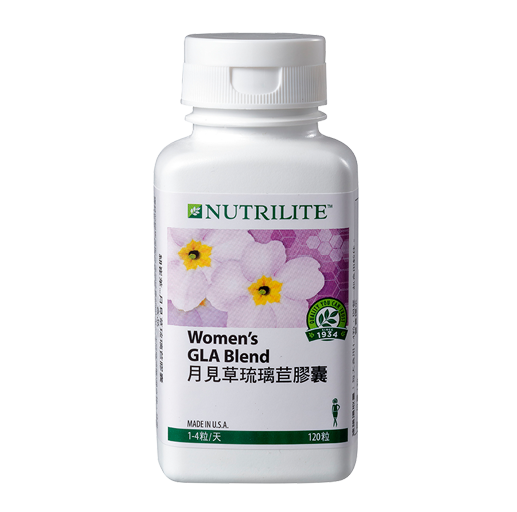

<div class="product_detail_content">
    <div class="picture">
        <div id="owl-demo" class="owl-carousel owl-theme">
            <div class="item"><span class="volume">90 錠</span></div>
        </div>
    </div>
    <div class="infomation">
        <h3>好甘萃錠<br><span class="small">結合中西精萃 迎接彩色人生</span></h3>
        <p>經紐崔萊科學家長達八年的苦心研究，並維持紐崔萊的嚴謹生產流程，選用東方草本白芍、甘草和西方植物葡萄籽、花椰菜四大成分萃取菁華，是忙碌現代人的調養良方。</p>
        <h4>產品特色</h4>
        <ul class="list_dot">
            <li>東方白芍、甘草，結合西方植物萃取菁華的葡萄籽、花椰菜。</li>
            <li>以豐富的有效成份，達到內養外護的功效。</li>
            <li>珍貴天然營養成分，可促進代謝、增強體力。</li>
        </ul>
        <!-- <a class="download" href="pdf/products_womens_gla_blend.pdf" target="_blank">營養成分PDF</a> -->
        <div class="btnWrap">
            <div class="showDetail">營養成分</div>
            <a class="download" href="pdf/products_proleber.pdf" target="_blank">下載PDF</a>
        </div>
        <div class="detailTable">
            <table class="tableizer-table">
                <thead>
                    <tr class="tableizer-firstrow">
                        <th>重要營養成分</th>
                        <th>1錠含</th>
                    </tr>
                </thead>
                <tbody>
                    <tr>
                        <td>白芍萃取菁華</td>
                        <td>68.75毫克</td>
                    </tr>
                    <tr>
                        <td>甘草萃取菁華</td>
                        <td>50 毫克</td>
                    </tr>
                    <tr>
                        <td>葡萄籽萃取菁華</td>
                        <td>43.33 毫克</td>
                    </tr>
                    <tr>
                        <td>花椰菜萃取菁華</td>
                        <td>21.67毫克</td>
                    </tr>
                </tbody>
            </table>
        </div>
    </div>
</div>
